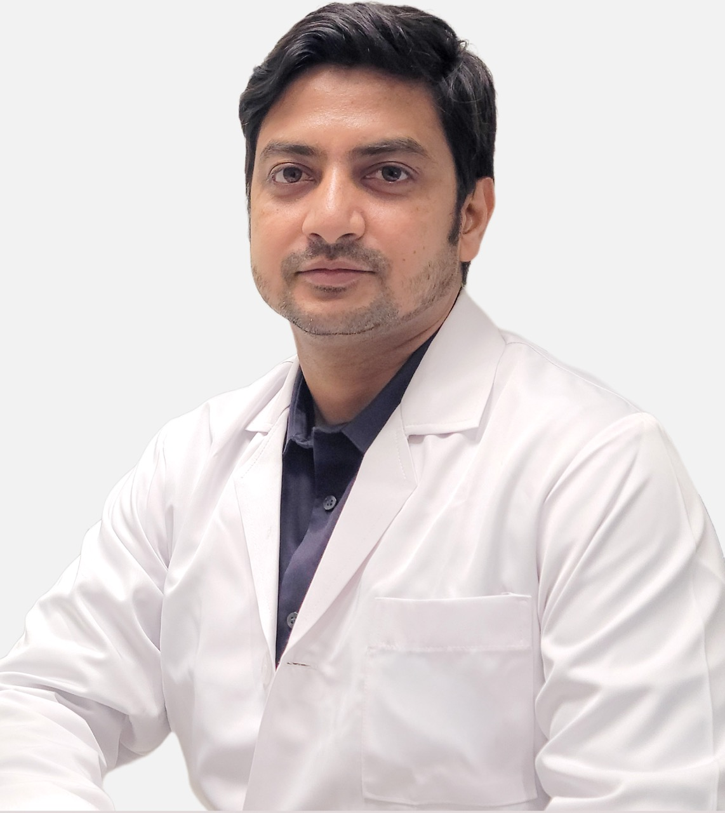

Glaucoma Diagnosis & Monitoring
Intraocular pressure assessment, gonioscopy, visual field and OCT-based structural monitoring, and long-term medical management.
MIGS Pioneer of Bangladesh 🇧🇩
Assistant Professor of Ophthalmology — Ispahani Islamia Eye Institute and Hospital
Consultant Ophthalmologist — Glaucoma, Cataract, and Complex Anterior Segment Surgeon
Technique can be taught. Judgment has to be built.

DHAKA, BANGLADESH
Clinical Focus
The conditions and procedures that make up daily practice — from first diagnosis through to the most complex reconstruction.
Intraocular pressure assessment, gonioscopy, visual field and OCT-based structural monitoring, and long-term medical management.
TrabEx Pro, GATT and BANG — tissue-sparing angle surgery introduced to Bangladesh, alone or combined with cataract surgery.
Trabeculectomy with mitomycin C, Ahmed valve and AADI implantation, and staged management of failed filtration.
Phacoemulsification with monofocal, toric and premium intraocular lens options, including hypermature and posterior polar cataract.
Zonular deficiency and capsular support, iris repair and pupillary cerclage, scleral fixation, and secondary intraocular lenses.
Angle surgery for childhood glaucoma, including the landmark GATT in primary congenital glaucoma performed in Bangladesh.
Welcome
From the very beginning of his career, Dr. Md Iftekher Iqbal has practised with an interventional glaucoma mindset — treating glaucoma as a disease to be addressed early and decisively rather than managed indefinitely with drops alone. That conviction made him the MIGS Pioneer of Bangladesh: the first surgeon in the country to introduce TrabEx Pro, GATT, and BANG, and the first Bangladeshi to publish MIGS cases in internationally indexed journals.
He brings particular skill to complex glaucoma and cataract surgery, managing challenging cases and complications from previous surgery with advanced techniques, guided by evidence and by what is genuinely safe and effective for each patient.
Explore
Five named techniques developed and described from Bangladesh — B-BANG, tFlow, Filter-Enhanced Gonioscopy, and more.
View Techniques →Peer-reviewed publications in internationally indexed journals, from MIGS outcomes to novel surgical methods.
View Publications →The MIIQ surgical series — over 150 films — plus features in international ophthalmic media.
Watch & Read →Consultation at Bangladesh Eye Hospital, Uttara and Mirpur branches — evenings, five days a week.
Book an Appointment →Featured
The most recent film from the MIIQ surgical series.